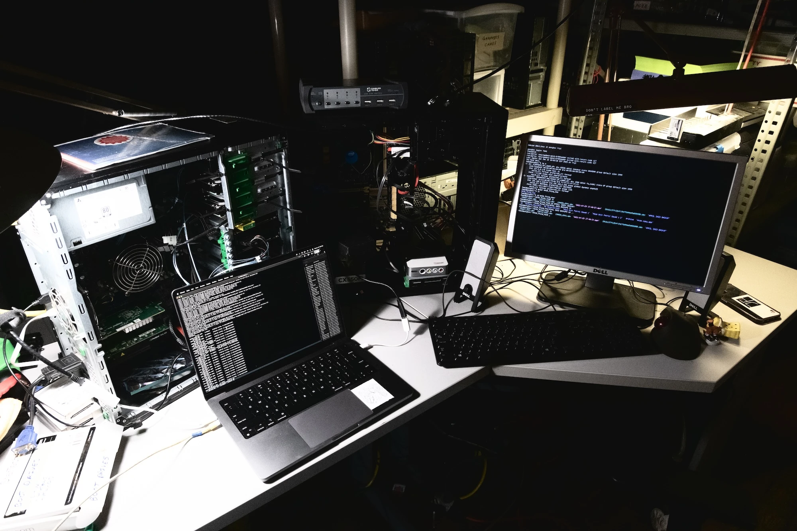

Ponybox is an old dell tower found in the RISD E-Waste pile alongside other old mac laptops and windows towers. Grief and I gutted it, installed new graphics cards that also came from other e-waste and installed 5 4tb hard drives, set up as a raid array. The server is running linux debian, with no desktop. I am currently jsut using this server to back up my main hard drive, that has my whole life on it. And to back up my website. I plan to use this server to host .flac music files to stream from as well.
Hello from my terminal! This is the server that this site will soon be hosted on.
incoming spellbook